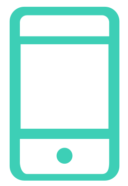

@if (isAppLoaded) {
@if (!orientationIsLocked()) {
@if (shouldShowHeader()) {
} @else {
}
} @else {
 }
}
}
}
{{ 'orientation.warning' | translate }}
{{ 'quantum.title' | translate }}
{{ 'quantum.message' | translate }}